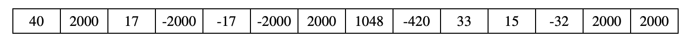

列表算法
Contents
列表算法#
“算法”一词最早出现在《周髀算经》这本书中，对应的单词是“algorism”（由9世纪的波斯数学家阿尔·霍瓦里兹米提出），代指阿拉伯数字的运算规则。随着计算机的快速发展，“算法”被赋予了新的含义，代指解决问题的方法，对应的英文单词演变为“algorithm”。
在计算机里，算法通常指解决某一问题的具体步骤：先做什么，再做什么，最后做什么，计算机只需要依照步骤运行，就可以解决问题。
列表中常见的算法包括：
找出列表元素极值，例如最大值和最小值
对列表元素进行统计，例如求和、求平均值
统计符合特征的元素个数
判断是否数组中存在元素符合某种特征
判断是否数组中的所有元素都符合某种特征
这些算法通常具有固定的模式：
从列表第一个元素开始进行顺序遍历(sequential iteration)
依次检查每一个元素
对元素进行一些操作 比较/筛选 （或）加到某一个变量上
持续遍历列表直到 找到符合条件的元素 （或）遍历到列表末尾
寻找极值#
下面代码用来打印a_list中元素的最大值：
a_list = [1,3,7,2,4]
a_max = a_list[0]
for i in range(len(a_list)):
if(a_list[i]> a_max):
a_max = a_list[i]
print(a_max)
我们也可以将它写成函数形式：
def find_max(l):
result = l[0]
for i in range(len(l)):
if(l[i]> result):
result = l[i]
return result
print(find_max([1,3,7,2,4]))
列表元素求和#
def get_sum(l):
sum = 0
for i in range(len(l)):
sum = sum+l[i]
return sum
print(get_sum([1,3,7,2,4]))
统计符合某种特征的元素个数#
Exercise: 统计列表中的偶数个数
def count_even(l):
count = 0
for i in range(len(l)):
if(l[i] % 2 == 0):
count=count+1
return count
print(count_even([1,3,7,2,4]))
统计符合某种特征的元素个数#
如何判断列表中所有元素均为偶数？
我们可以遍历列表，如果发现有元素是奇数，则直接返回False；如果所有元素都遍历完毕，函数依然没有返回，则说明所有元素均为偶数，函数返回True。
def all_even(l):
for i in range(len(l)):
if(l[i] % 2 != 0):
return False
return True
print(all_even([2, 0, 3,4]))
“判断列表中的所有元素都符合X特征”，这类问题算法如下：
顺序遍历列表，如果找到一个反例（不符合X特征），则直接返回False
如果列表遍历结束，函数依然没有返回，则说明所有元素均符合X特征，函数返回True
课件#
课件下载：Algorithm
作业#
Execise#
问题：编写函数，判断列表是否严格单调递增。
def check(l):
#Add code here
print(check([1,3,7,24,28])) #True
print(check([1,3,7,4])) #False
Sound#
Digital sounds can be represented as a list of integer values. The volume of a sound depends on the amplitude of each value in the sound. The amplitude of a value is its absolute value. For example, the amplitude of -20 is 20, and the amplitude of 40 is 40.
Part(a)#
High level of volume can damage your hearing. Write a function isSafe(sound) that will determine if the amplitude of any value in the list of sound is below 1000.
For example, isSafe([500, 450, -50, 250]) will return True, while ifSafe([1020, 80, -200]) will return False.
def isSafe(sample):
#Add code here
print(isSafe([500, 450, -50, 250])) #True
print(isSafe([1020, 80, -200])) #False
Part(b)#
Write a function countNoise(sample, limit) that will return the total number of values in a sample that were greater than limit, or less than -limit. For example, assume that the sample has been initialized with the following values:

When the statement
s = [40, 2532, 17, -2300, -17, -4000, 2000, 1048, -420, 33, 15, -32, 2030, 3223]
count = countNoise(s, 2000)
print(count)
is executed, count will be 5, since there are 5 values that are greater than 2000, or less than -2000.
def countNoise(sample, limit):
#Add code here
s = [40, 2532, 17, -2300, -17, -4000, 2000, 1048, -420, 33, 15, -32, 2030, 3223]
print(countNoise(s, 2000)) #5
Part(c)#
Write a function limitAmplitude(sample, limit) that will change any value that has an amplitude greater than the given limit. Values that are greater than limit are replaced with limit, and values that are less than -limit are replaced with –limit. For example, when
s = [40, 2532, 17, -2300, -17, -4000, 2000, 1048, -420, 33, 15, -32, 2030, 3223]
limitAmplitude(s, 2000)
is executed, sample will contain the following values:

def limitAmplitude(sample, limit):
#Add code here
s = [40, 2532, 17, -2300, -17, -4000, 2000, 1048, -420, 33, 15, -32, 2030, 3223]
limitAmplitude(s, 2000)
print(sample) # should print the values as shown above